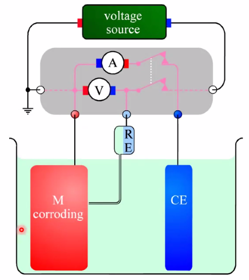

Corrosion
unwanted oxidation of metals
Main points
- Understand BV mixed corrosion potential and the corresponding Tafel plot.
- The slope is 1/b(Tafel slope)
- Fe corrosion: Effects of Fe(ii) and Cl\(^-\), pits and crevices
- Cathodic and anodic protection
Effects of salt, chloride ions
- Complexing agent:
- \(\mathrm{Fe}(s)+\frac{3}{4} \mathrm{O}_{2}(\text { air })+3 \mathrm{H}_{3} \mathrm{O}^{+}(a q)+2 \mathrm{Cl}^{-}(a q) \rightarrow \mathrm{FeCl}_{2}^{+}(a q)+\frac{9}{2} \mathrm{H}_{2} \mathrm{O}(\ell)\)
- Dissolving protective layers:
- \(\mathrm{Al}_{2} \mathrm{O}_{3}(s)+8 \mathrm{Cl}^{-}(a q)+6 \mathrm{H}_{3} \mathrm{O}^{+}(a q) \rightarrow 2 \mathrm{AlCl}_{4}^{-}(a q)+9 \mathrm{H}_{2} \mathrm{O}(\ell)\)
Noble metls and other corrosion-resistive metals
- Noble metals
- Only gold is thermodynamically stable
- Pt, other Pt group metals, Ag, Hg, and to some extent Cu are often stable, because of small driving forces for oxidation
- Corrosion resistive metals
- Aluminium is very unstable, but therefore forms a very stable protective oxide layer Al\(_2\)O\(_3\).
- Same is true for many non-noble metals; Mg, Ti, Cr, Ni, Zn, Sn
Corrosion cells: Two electrodes on the same surface
- Often reduction and oxidation happens at different locations:
- Electrochemistry: Transport of electrons and ions between the two locations
- Often av ever-changing mosaic of sites due to fluctuating driving forces and kinetics (p215-216 in textbook)
Corrosion of Iron and its alloys
- Is often autocatalytic means: it accelerates itself.
- \(\mathrm{Fe}(s) \rightarrow 2 \mathrm{e}^{-}+\mathrm{Fe}^{2+}(a q)\)
- \(4 \mathrm{Fe}^{2+}(a q)+\mathrm{O}_{2}(a q)+4 \mathrm{H}_{3} \mathrm{O}^{+}(a q) \rightarrow 4 \mathrm{Fe}^{3+}(a q)+6 \mathrm{H}_{2} \mathrm{O}(\ell)\)
- \(2 \mathrm{Fe}^{3+}(a q)+\mathrm{Fe}(s) \rightarrow 3 \mathrm{Fe}^{2+}(a q)\)
- All above is a negative spiral of oxidation
- Total: \(4 \mathrm{Fe}(s)+3 \mathrm{O}_{2}(a q)+12 \mathrm{H}_{3} \mathrm{O}^{+}(a q) \rightarrow 4 \mathrm{Fe}^{3+}(a q)+18 \mathrm{H}_{2} \mathrm{O}(\ell)\)
- Agitation(røring) slows corrosion by removing catalyst
Corrosion potential and corrosion current
- Corrosion potential: Mixed potential caused by two electrode processes
- Anodic reaction: \(\mathrm{M}(s) \rightleftarrows n \mathrm{e}^{-}+\mathrm{M}^{n+}(a q)\)
- Cathodic: \(2 \mathrm{H}_{3} \mathrm{O}^{+}(a q)+2 \mathrm{e}^{-} \rightleftarrows 2 \mathrm{H}_{2} \mathrm{O}(\ell)+\mathrm{H}_{2}(g)\)
- Limited by kinetics (no transport or ohmic polarisation)
- 
- See figure under
##Corrosioncells above.
- See figure under
- Tafel regions of each of the two reactions
Polarisation curve
- Linear polarisation
- \(I=I_{\text {cor }}\left[\exp \left\{\frac{E-E_{\text {cor }}}{0.434 b_{\mathrm{ox}}^{\mathrm{M}}}\right\}-\exp \left\{\frac{-\left(E-E_{\mathrm{cor}}\right)}{0.434 b_{\mathrm{rd}}^{\mathrm{H}}}\right\}\right]\)
- Polarisation resistance (explains how easily a material corrodes)
- \(\frac{1}{\text { slope at } E_{\text {cor }}}=\frac{1}{(\mathrm{~d} I / \mathrm{d} E)_{E_{\text {cor }}}}=\frac{0.434 b_{\mathrm{ox}}^{\mathrm{M}} b_{\mathrm{rd}}^{\mathrm{H}}}{\left(b_{\mathrm{ox}}^{\mathrm{M}}+b_{\mathrm{rd}}^{\mathrm{H}}\right) I_{\text {cor }}}=R_{\mathrm{pol}}\)
- Can also be found form AC Spectroscopy
Pitting corrosion
- (A lot in the textbook is a bit speculative..)
- Oxidation of Fe accompanied by reduction of O\(_2\)(g)
- Catalysed by Fe(iii) and Cl\(^-\) as complexing agent
Crevice corrosion
- Same mechanism as in pitting corrosion
- Avoid closed/covered areas
Corrosion protection
- Coatings
- Electropaointing with carboxylate COO\(^-\) groups
- Negatively charged paint polymer particles migrate, are neutralised, and adhere
- Fe dissolves electrolytically and forms insoluble Fe carbocylates
- Uniform
- Electroplating - Electrochemical reduction of plating metal
- Electroless plating - chemical reduction of plating metal
- Corrosion inhibitors
- Oxidising agents - forms protective film
- Nitric acid
- Electrochemical anodisation (e.g. for Al)
- “Phosphating” - hot phosphoric acid or acidic phosphate solution
- Oxidising agents - forms protective film
Cathodic protection
- Drive the metal (e.g. Fe) towards (cathodic) reduction
- Use Zn as sacrificial anode (“offeranode”)
Anodic protection: Passivation
- Drive the metal towards (anodic) oxidation to form a protective oxide layer
- Some metals are naturally protected by oxidic layers(Al, Cri, Ni)
- For others, we may aply chemically or electrochemically forced formation of a oxidic scale: passivation
Stress corrosion, H\(_2\), fatigue
- Crack corrosion
- High energy in crack tips
- Stress corrosion cracking
- Alloys, not pure metlas
- Hydrogen embrittlement
- Hydrogen solved in metal, makes it brittle.
- Corrosion fatigue
- Dislocations entangle
- Stress - enhanced corrosion
- axle with fatigue corrosion: